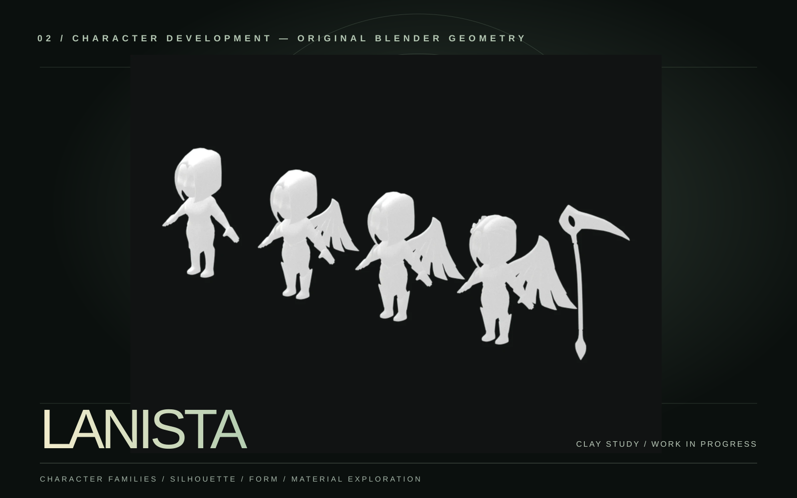

001 / CHARACTER DEVELOPMENTSTYLIZED 3D / BLENDER / SOURCE STUDIES

LANISTA 01
Five distinct character-family studies, each originating from real Blender scene geometry. A closer look at the silhouettes, equipment and archetypes behind a game world.
SOURCE-BASED CLAY PREVIEWS / NOT FINAL TEXTURED KEY ART